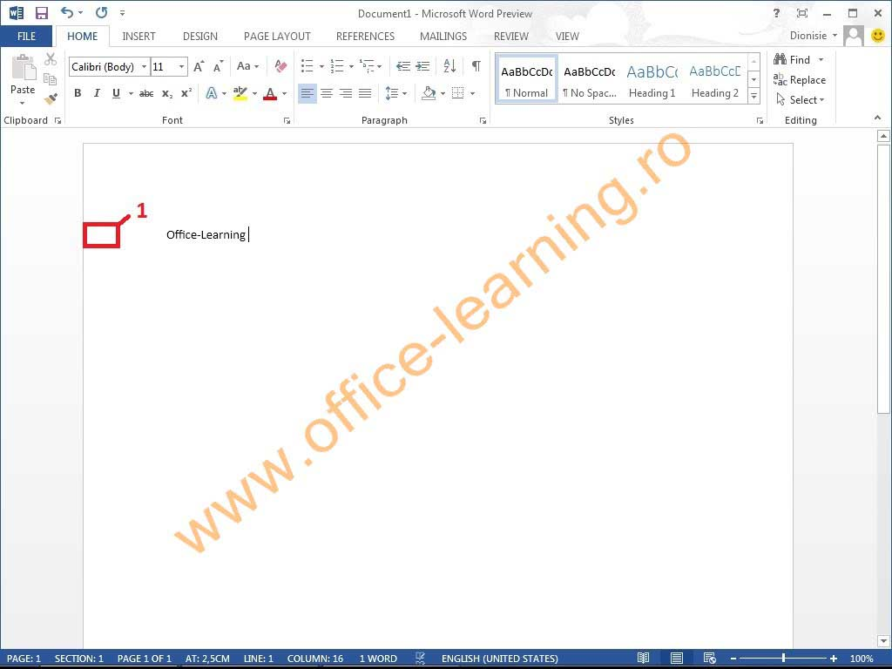

Bine ați venit într-un loc unde puteți învăța funcționalitățile de bază din Microsoft Word!
- Schimbi fontul și dimensiunea.
- Aplici bold, italic sau subliniere.
- Schimbi culoarea textului
- Aliniază textul la stânga, dreapta, centru sau justificat.
Formatarea textului este esențială pentru lizibilitate. Poți modifica fontul, culoarea, dimensiunea, poți evidenția textul sau îl poți aranja în pagină prin aliniere, indentare, și spațiere. Aceste setări se regăsesc în tab-ul „Home”.
